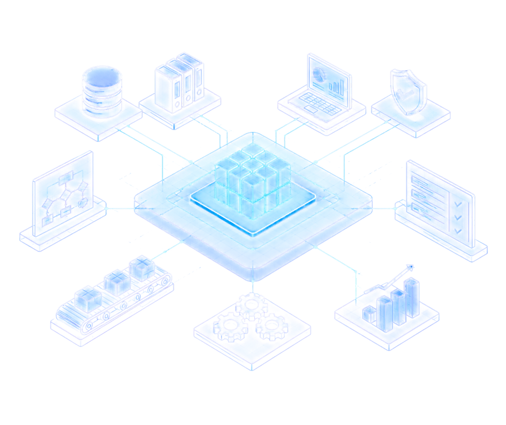
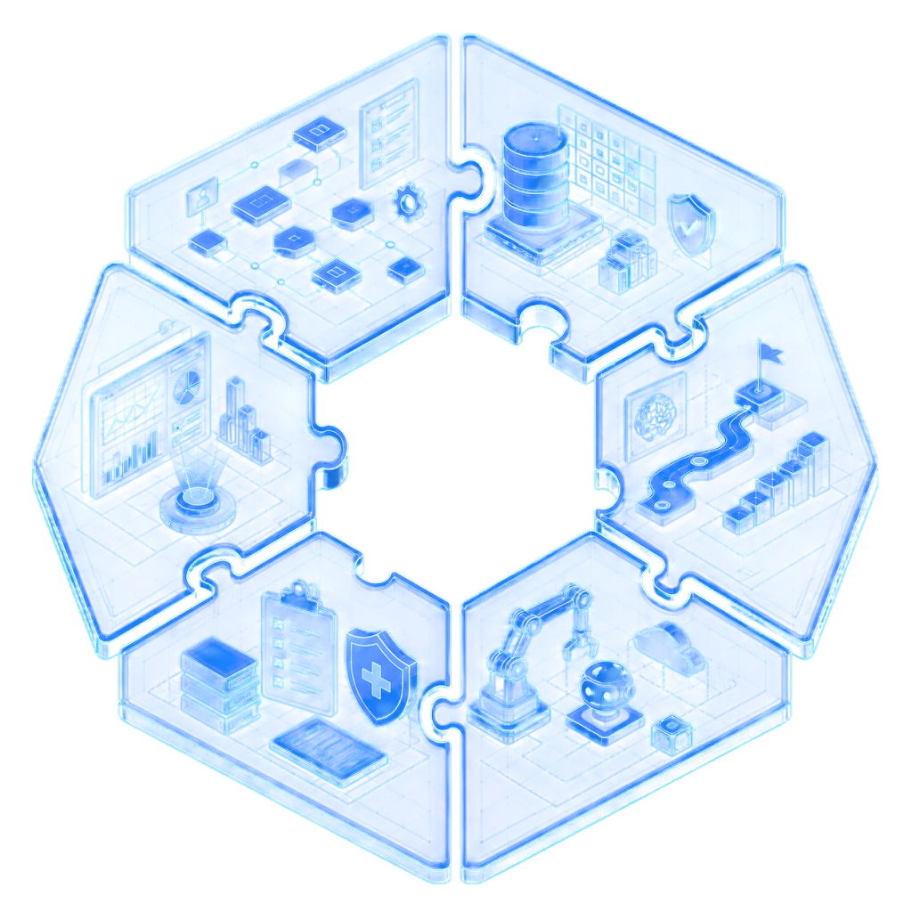
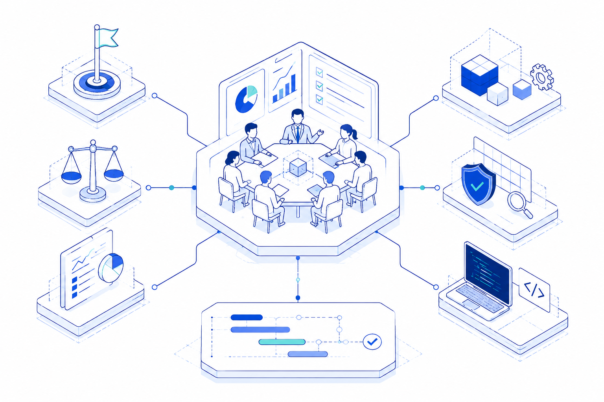
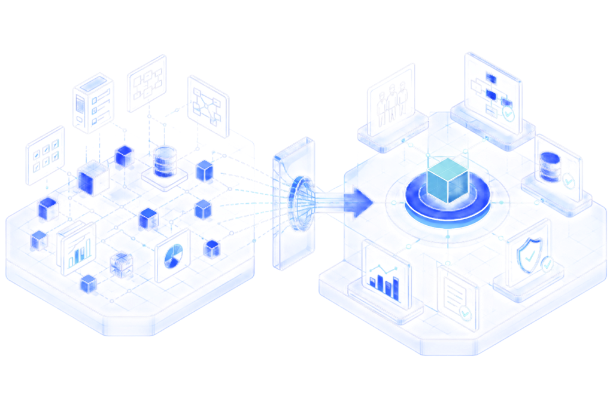
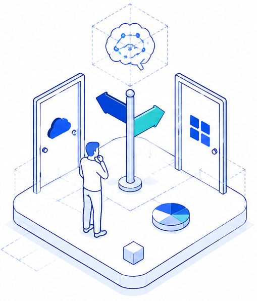

PILLAR 3 OF 4
DIGITAL
INTELLIGENCE
The systems read: whether your digital estate enables execution, compliance, and scale, or quietly holds them back. Digital serves the operation, never the other way around.


WHAT WE EXAMINE
The anatomy of this intelligence

SERVICES UNDER
THIS INTELLIGENCE
Systems & workflow assessment
What you run, and what it quietly blocks.
Data quality & governance review
Whether your data can carry your decisions.
Digital & AI adoption roadmap
Where AI genuinely pays, sequenced and costed.
Automation & agentic AI pilots
Working pilots with Aliro's ecosystem partners.
Digital-health compliance review
Platform and data posture against the applicable frameworks.
Decision intelligence & dashboards
System output turned into management insight.


Aliro leads the business case, prioritisation, governance, and vendor-neutral roadmap.
Specialist partners deliver architecture engineering, security testing, and technical implementation.
Digital reviews often focus on the technology inventory while overlooking workflow, data quality, governance, and adoption. That is where the value usually sits.

